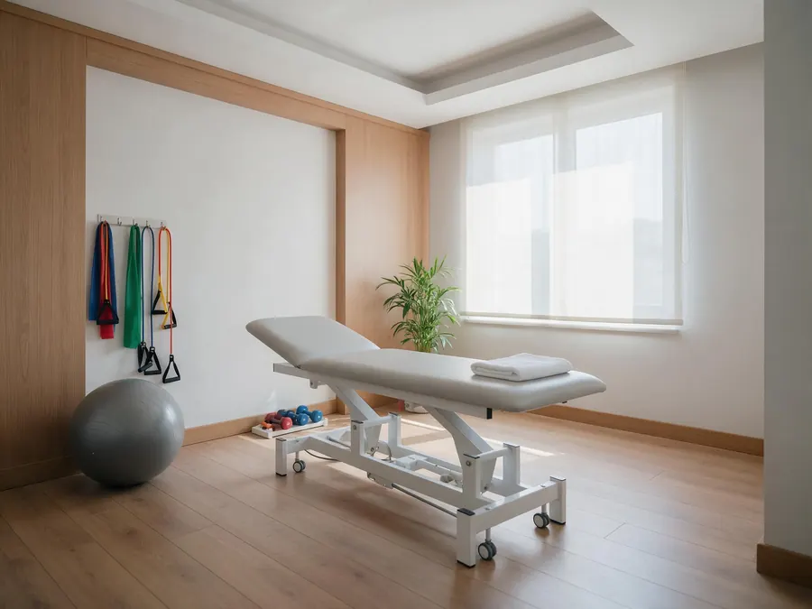
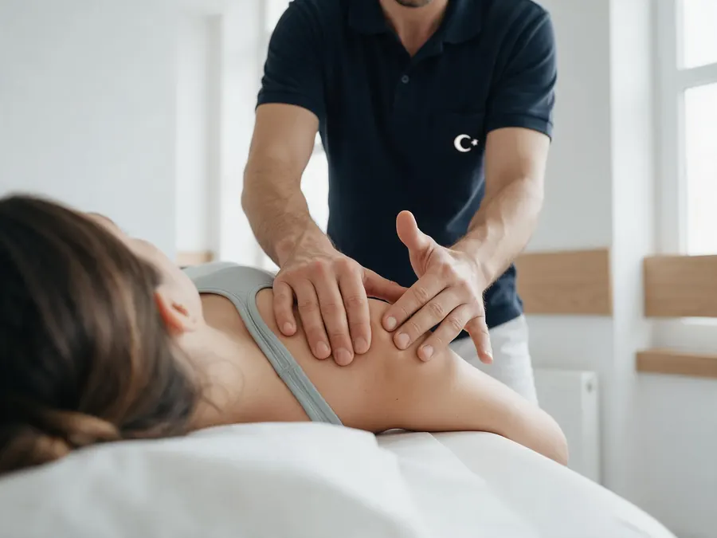
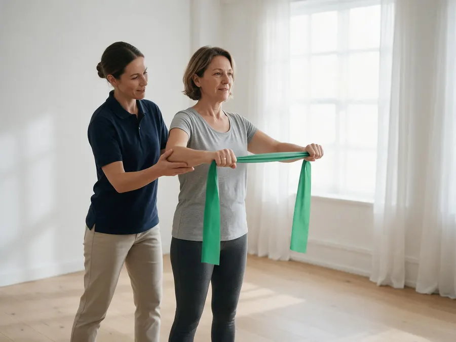
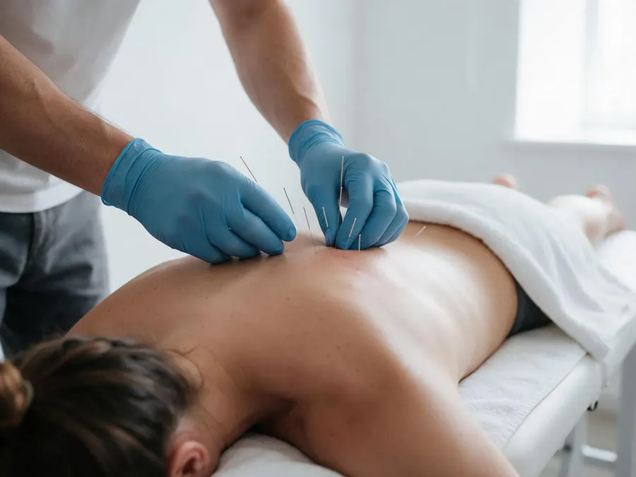
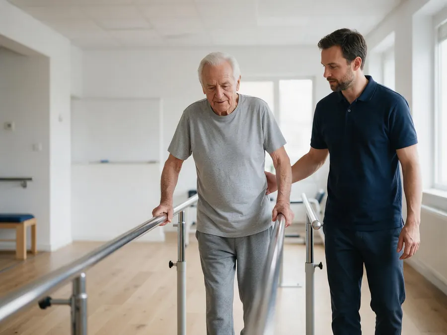
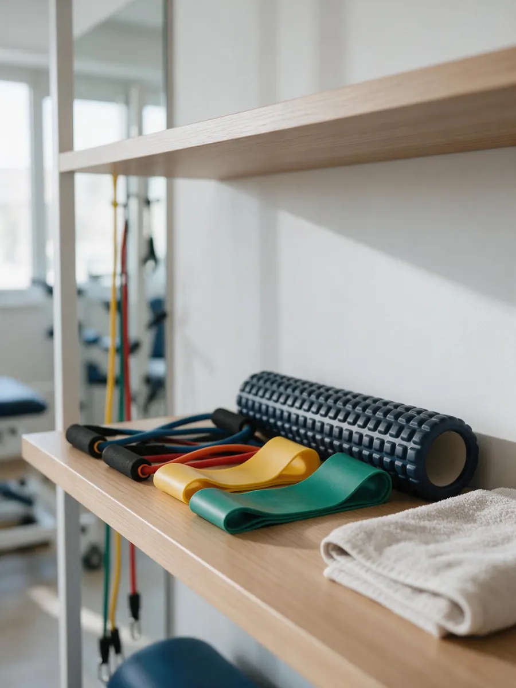

01
Değerlendirme ve muayene
Duruş, hareket açıklığı, kas kuvveti ve ağrı analiziyle kişiye özel tedavi planı.
45 dkDeğerlendirmeden egzersize, size özel bir tedavi planı. Seans saatinizi online seçin, hatırlatmayı WhatsApp'tan alın; beklemeden tedavinize başlayın.
5,0 Google puanı · 112 değerlendirme
Her tedavi ayrıntılı bir değerlendirmeyle başlar. Size uygun yöntemleri birlikte seçer, ilerlemeyi her seansta ölçeriz.

Duruş, hareket açıklığı, kas kuvveti ve ağrı analiziyle kişiye özel tedavi planı.
45 dk
Eklem ve yumuşak doku mobilizasyonuyla ağrıyı azaltır, hareketi geri kazandırır.
45 dk
Güçlendirme, esneklik ve denge çalışmaları; evde devam edeceğiniz programla birlikte.
45 dk
Tetik noktalardaki kas gerginliğini çözerek boyun, sırt ve bel ağrısında rahatlama.
30 dk
İnme, MS ve Parkinson sonrası yürüme, denge ve günlük yaşam becerilerine yönelik program.
60 dk
TENS, ultrason ve sıcak-soğuk uygulamalarla ağrı ve ödem kontrolü.
30 dkSık başvurulan şikâyetler
Uygun gün ve saati online seçin ya da WhatsApp'tan yazın.
Şikâyetinizi dinler, ayrıntılı muayeneyle ağrının kaynağını buluruz.
Seans sayısını ve yöntemleri birlikte belirleriz; her seans hatırlatmalı.
İlerlemeyi ölçer, ev programınızı günceller, kontrol seansıyla kapatırız.
Hizmeti, günü ve saati seçin. Randevunuz kliniğe iletilir; seans gününden önce WhatsApp'tan hatırlatma gelir.
Seansınızdan bir gün önce WhatsApp'tan hatırlatma gelecek. Talebi şimdi WhatsApp'tan da iletebilirsiniz.
WhatsApp'tan iletSeans sırasında telefona bakamadığınızda gelen sorular bekler, hasta da başka yere yazar. Asistan, sık sorulan soruları sizin bilgilerinizle yanıtlar, boş saatleri önerir ve randevuyu takvime işler.
Fizyonörom'da her hasta, ayrıntılı bir değerlendirme ve kişiye özel bir tedavi planıyla başlar. Seanslar birebir yürütülür; ilerleme her seansta ölçülür ve ev programınız buna göre güncellenir.
Amacımız yalnızca ağrıyı dindirmek değil, ağrının tekrar etmemesi için hareketi doğru öğretmek.
Başka bir sorunuz varsa WhatsApp'tan yazın; hemen yanıtlayalım.
Şikâyetinizi dinliyor, duruş, hareket açıklığı ve kas kuvvetinizi değerlendiriyoruz. Varsa MR, röntgen ve doktor raporlarınızı getirmeniz değerlendirmeyi kolaylaştırır. Seans sonunda tedavi planınızı birlikte konuşuyoruz.
Şikâyete ve kişiye göre değişir. Değerlendirmeden sonra size önerilen seans sayısını ve sıklığını açıkça söylüyoruz.
Değerlendirme için zorunlu değildir. Mevcut raporlarınız ve görüntülemeleriniz varsa yanınızda getirmeniz yeterli.
Hareket etmenizi kısıtlamayan rahat bir kıyafet (eşofman, tayt, tişört) yeterli.
Hatırlatma mesajını yanıtlamanız ya da WhatsApp'tan yazmanız yeterli; size yeni bir saat önerelim.
Seans saatinizi online seçin ya da bize yazın; size en yakın boş saati bulalım.